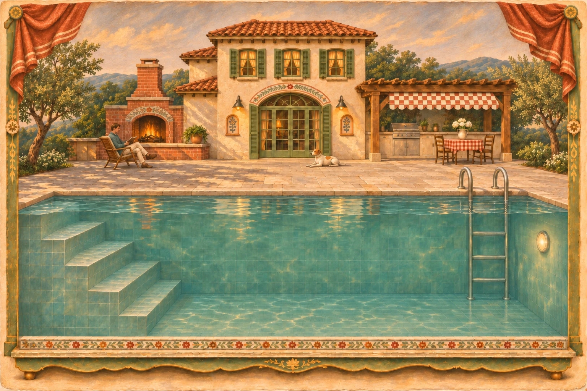
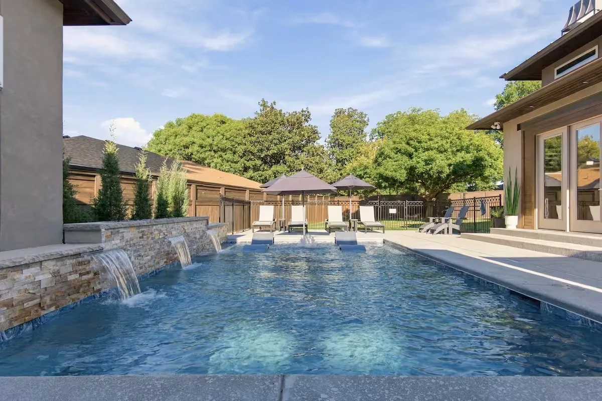
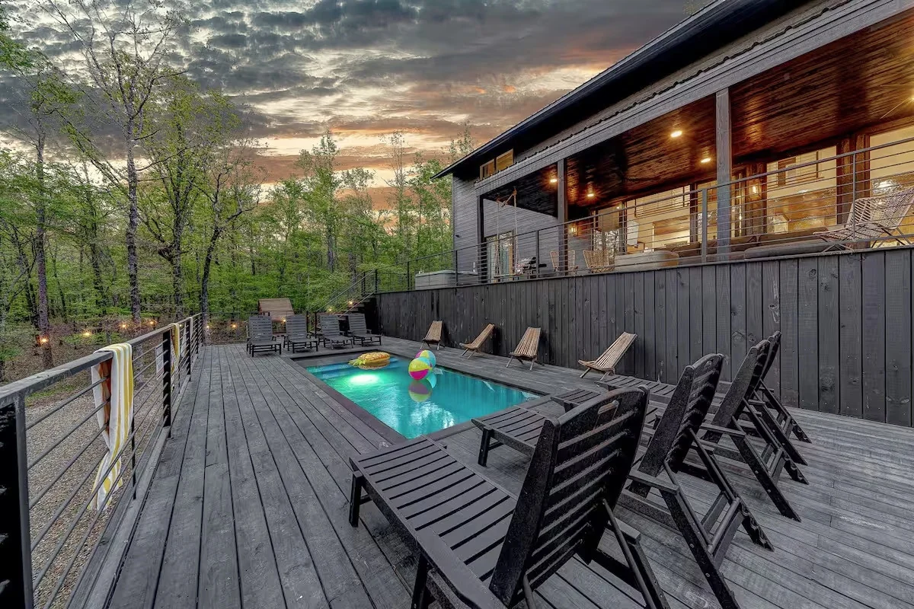
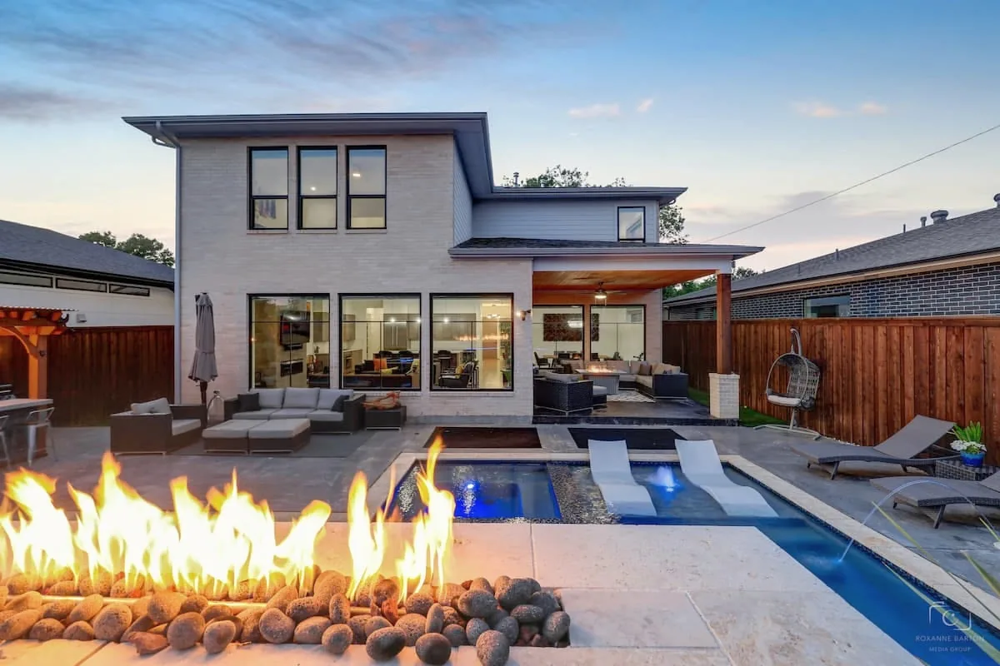
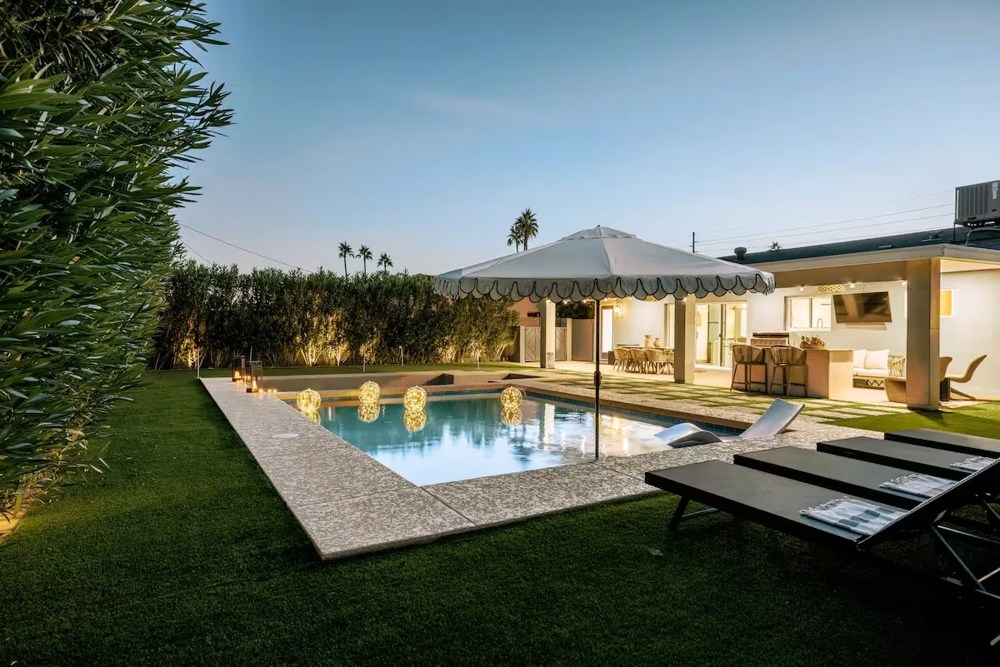
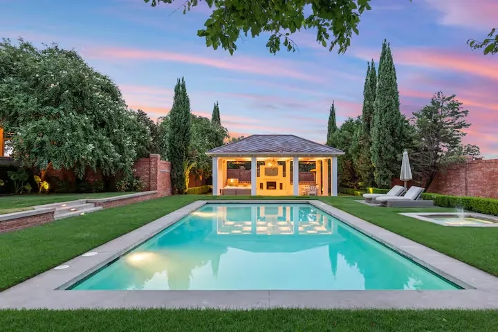
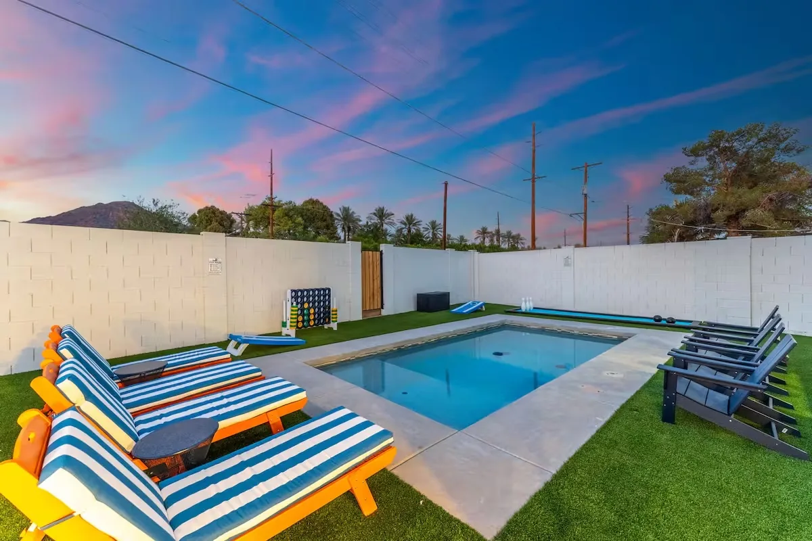
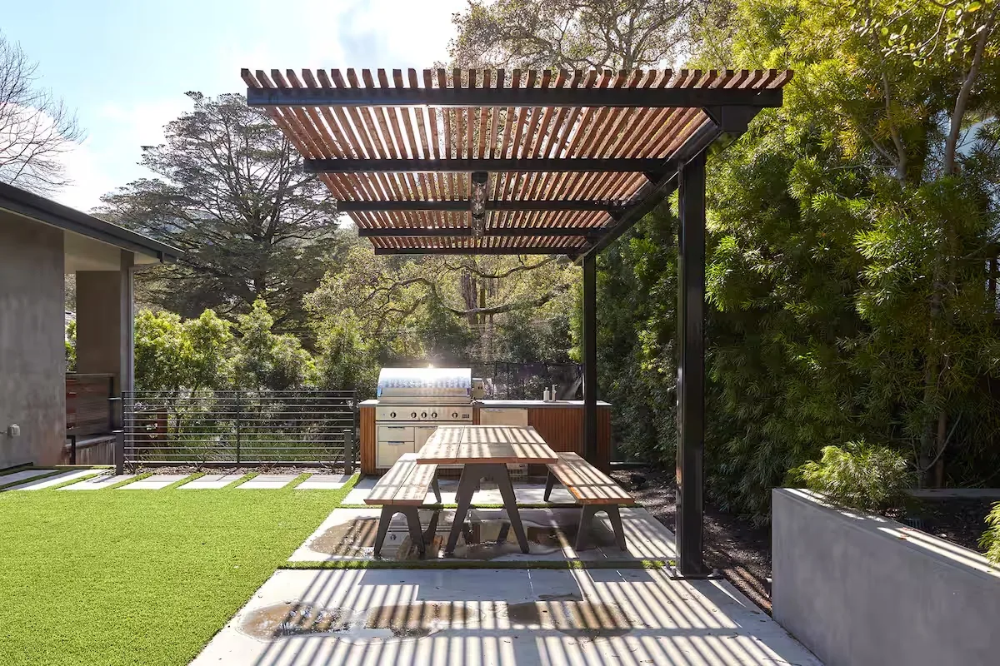

New custom pools
Pools and spas designed around your yard and how you want to use it.



An optional toy: drag the submarine around the pool, or focus it and use the arrow keys. Home resets its position.
Don’t be shy, give us a call
Aubrey, Texas · Serving North Texas
A collection by Collins

9 photographs · Open album

13 photographs · Open album

15 photographs · Open album

13 photographs · Open album

4 photographs · Open album

14 photographs · Open album

15 photographs · Open album

11 photographs · Open album
What we build
Pools and spas designed around your yard and how you want to use it.
Patios, pergolas, shade structures, outdoor kitchens, turf and fire features. Room for a little of everything.
A spa, a fresh finish, or a new plan for the pool you already have.
A little correspondence
Have a project in mind? Call or text us. Happy to kick around ideas.
COLLINS CUSTOM POOLS & BACKYARDS
FAMILY OWNED / AUBREY, TEXAS
Call or text Collins
469-500-7713Serving Denton County & North Texas.
Aubrey · Denton · Little Elm · Prosper
Celina · Frisco & surrounding communities.